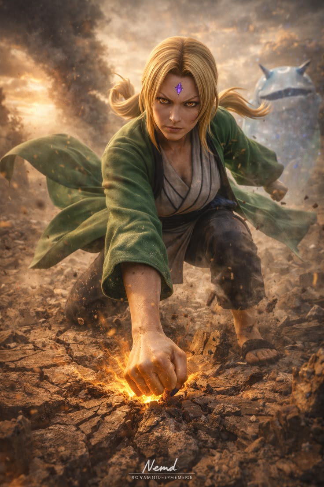

Tsunade, also known as Tsunade Senju, is one of the most powerful kunoichi in Naruto and a direct descendant of the prestigious Senju Clan. Born in Konohagakure, she is the granddaughter of Hashirama Senju, the First Hokage, which places her among the most respected figures in the ninja world. Tsunade is widely recognized as one of the legendary Sannin, alongside Jiraiya and Orochimaru, trained under Hiruzen Sarutobi.
She is best known for her unparalleled medical ninjutsu, earning the title of the greatest medical-nin of her time. Tsunade revolutionized the medical system in Konoha by introducing medical ninja teams into battle units, significantly increasing survival rates during wars. In addition to her healing abilities, she possesses incredible physical strength, capable of destroying the ground or defeating powerful enemies with a single punch, thanks to her precise chakra control.
Tsunade later becomes the Fifth Hokage of Konoha, where she demonstrates strong leadership, courage, and dedication to protecting her village. Despite her tough and confident personality, she carries deep emotional scars from losing loved ones, which once caused her to lose faith. However, she overcomes her fears and continues to fight for the next generation. Her legacy lives on through her student Sakura Haruno, making her a symbol of strength, resilience, and compassion.
Tsunade, also known as Tsunade Senju, has a strong and multifaceted personality that makes her one of the most compelling characters in Naruto. She is bold, confident, and often short-tempered, never hesitating to speak her mind or stand up to others, which reflects her natural leadership as the Fifth Hokage of Konohagakure. Despite her tough exterior, Tsunade has a deeply compassionate and caring nature, especially when it comes to protecting her village and saving lives as a medical ninja.
Tsunade is also known for her emotional depth. The loss of her loved ones, including her brother and fiancé, left her with lasting trauma and fear of loss, which once led her to avoid responsibility and even develop a fear of blood. However, she eventually overcame these struggles, showing great inner strength and resilience.
She has a playful side as well, often seen gambling and sometimes losing large amounts of money, which adds a human and relatable aspect to her character. As a mentor, she is strict but supportive, especially toward Sakura Haruno, guiding her to become a powerful ninja. Overall, Tsunade’s personality blends strength, vulnerability, and compassion, making her a respected and inspiring leader.
Tsunade, also known as Tsunade Senju, possesses extraordinary abilities that make her one of the strongest kunoichi in Naruto. As a descendant of the Senju Clan and a member of the legendary Sannin, her power lies in both combat and medical expertise. One of her greatest abilities is her mastery of medical ninjutsu. Tsunade is considered the greatest medical-nin of her time, capable of healing severe injuries, performing complex surgeries, and even saving lives in critical conditions. She also created advanced medical systems that improved survival rates in battle.
Another key ability is her immense physical strength, achieved through precise chakra control. With a single punch, she can shatter the ground or defeat powerful enemies. This control also allows her to use the Strength of a Hundred Seal, a technique that stores chakra over time and releases it to grant rapid healing and enhanced power. Tsunade also has incredible durability and regeneration, allowing her to recover from injuries that would be fatal to others. In battle, she combines strength, intelligence, and medical skills to support allies and defeat enemies. Her abilities make her not only a powerful fighter but also a life-saving protector, solidifying her legacy as one of the greatest ninjas in the series.

Tsunade, also known as Tsunade Senju, carried out many important missions throughout Naruto, both as a legendary Sannin and later as the Fifth Hokage of Konohagakure. One of her most significant missions was her leadership during the invasion of Konoha by Orochimaru. After becoming Hokage, she took immediate responsibility for protecting the village and rebuilding it after the attack, ensuring the safety of its people and restoring order.
Another crucial mission was during the Fourth Great Ninja War, where Tsunade played a major role as both a leader and frontline fighter. She coordinated medical teams, ensuring that injured shinobi received immediate care, and worked alongside other Kage to battle powerful enemies. Her medical expertise saved countless lives, proving that her role was just as important as those fighting on the battlefield.
Tsunade does not have Sage Mode in Naruto. Unlike Jiraiya or Naruto Uzumaki, she was never shown learning or using senjutsu (natural energy techniques). Instead, Tsunade’s strength comes from a different and equally powerful set of abilities. Her main specialty is medical ninjutsu, where she is considered the greatest medical ninja of her time. She can heal severe injuries, perform complex operations, and even regenerate her own body during battle.
One of her most powerful techniques is the Strength of a Hundred Seal, which stores chakra over a long period and releases it to grant immense power and rapid regeneration. This ability allows her to survive injuries that would normally be fatal and continue fighting without slowing down. Tsunade also possesses superhuman strength, achieved through precise chakra control, enabling her to destroy the ground or defeat enemies with a single punch. While she may not use Sage Mode, her combination of healing, strength, and durability makes her one of the most powerful and dangerous shinobi in the series.